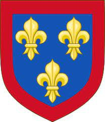

1538264665 Queen Constance of Arles
* 986 Arles, France
† 1032 Meulan, Yvelines, Frankrike
Drottning av Frankerna
Blev högst 46 år
* 986 Arles, France
† 1032 Meulan, Yvelines, Frankrike
Drottning av Frankerna
Blev högst 46 år
3076529330 King Guilleaume I (Wilhelm I) de Arles
* omkring 950
† 993
Kung av Aquitaime. Greve av Provence
Blev ca 43 år
* omkring 950
† 993
Kung av Aquitaime. Greve av Provence
Blev ca 43 år

3076529331 Queen Adelaide Blanche de Anjou
* omkring 940
† 1028
Drottning av Aquitaine & Frankerna. Grevinna av Gévaudan & Forez & Toulouse & Provence &
Blev ca 88 år
* omkring 940
† 1028
Drottning av Aquitaine & Frankerna. Grevinna av Gévaudan & Forez & Toulouse & Provence &
Blev ca 88 år
6153058662 Count Fulk II de Anjou
* 920 Tours, Frankrike
† 960 Tours, Frankrike
Greve av Anjou
Blev högst 40 år
* 920 Tours, Frankrike
† 960 Tours, Frankrike
Greve av Anjou
Blev högst 40 år

6153058663 Countesse Gerberge de Gatinais
* omkring 913 Gatinais, Orlenais-Centre, France
† 952 Tours, Frankrike
Grevinna av Anjou
Blev ca 39 år
* omkring 913 Gatinais, Orlenais-Centre, France
† 952 Tours, Frankrike
Grevinna av Anjou
Blev ca 39 år

12306117326 Geoffroy II de Gatinais
* 890
† 942
Blev högst 52 år
* 890
† 942
Blev högst 52 år